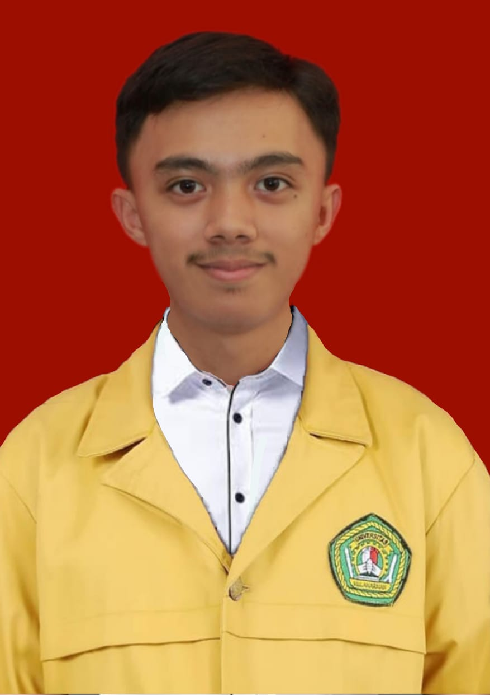
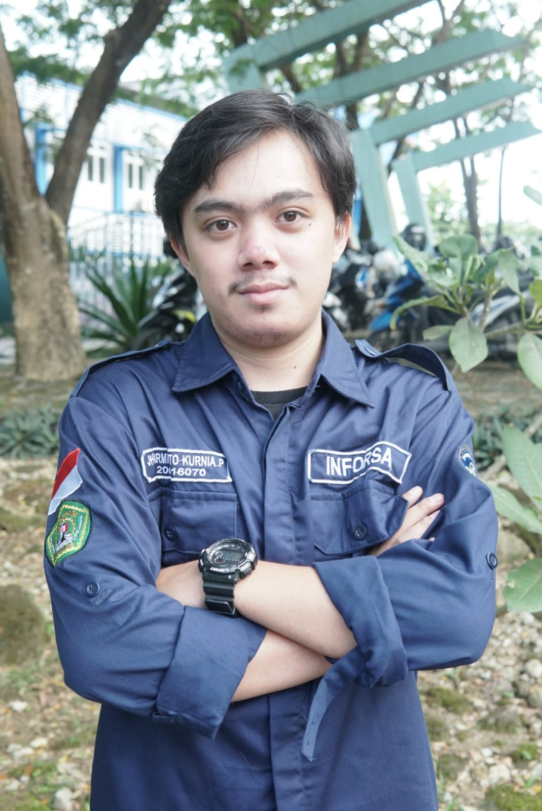

Nama saya Jharmiyanto Kurnia Pasangkin. Biasa dipanggil Jharmi, Jharmiyanto, Yanto, Kurnia, Kurni, Datar:).
apapun itu yang penting kamu senang:).
Saya lahir di Rantepao, 22 Januari 2002, Asal saya dari Toraja yang merupakan salah satu kabupaten di provinsi Sulawesi Selatan.
Kata orang Indonesia ini memiliki banyak keanekaragaman disetiap tempatnya, maka dari itu saya putuskan untuk pergi merantau untuk mempelajari hal-hal baru
maka dari itu saya putuskan untuk berlabu di pulau kalimantan dan masuk di salah satu Universitas Negeri yaitu Universitas Mulawarman dan sekarang saya telah duduk di semester 5 program studi Sistem Informasi Fakultas Teknik.
Pada semester 5 ini saya sedang fokus pada Program Studi Independen Kampus Merdeka Skilvul #TECH4IMPACT: Front-End Web Development Batch3

Himpunan Mahasiswa merupakan salah satu wadah bagi mahasiswa untuk meningkatkan potensi yang ada didalam dirinya
Ya!!! saya tergabung dalam himpunan mahasiswa yang ada di program studi saya namanya INFORMATION SYSTEM ASSOCIATION atau dikenal dengan INFORSA.
Banyak hal yang telah saya dapatkan selama bergabung di himpunan tersebut dan harapannya selalu terus berproses didalamnya